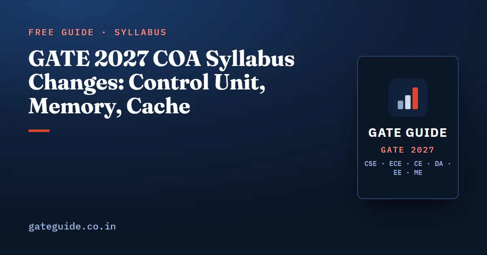

GATE 2027 COA Syllabus Changes: Control Unit, Memory, Cache

The GATE COA syllabus for 2027 names four things the 2026 version did not: design of the control unit (hardwired and microprogrammed), memory interfacing, memory hierarchy performance and cache memory mapping. It also drops "main memory and secondary storage", so magnetic disk geometry and access-time questions are no longer explicitly part of COA. Cache and pipelining remain the core of the subject.
In this guide
- Key takeaways
- The wording, phrase by phrase
- Newly explicit: design of the control unit
- COA weight and priorities after the change
- Newly explicit: memory interfacing
- Now named: performance and cache mapping
- Dropped: main memory and secondary storage
- What did not change
- The IIT Madras angle
- An adjusted COA plan
Key takeaways
- COA is the second-largest edit in the 2027 CS syllabus, after Computer Networks.
- Newly explicit: hardwired and microprogrammed control unit design; memory interfacing; hierarchy performance; cache memory mapping.
- Dropped: main memory and secondary storage. Disk tracks, sectors, seek time and rotational latency are now low priority for COA. Disk scheduling stays in the OS syllabus.
- Unchanged in substance: addressing modes, ALU design, interrupts and DMA, pipelining and hazards.
- Analyst compilations (approximate, not official) put COA at about 8.5 marks per paper over 2009–2026, and about 9.2 since 2018.
- The practical plan: keep cache and pipelining as the two pillars, add one session each on control units and memory interfacing, and stop drilling disk geometry for COA.
The wording, phrase by phrase
Both texts below are from the official syllabus documents. Check the current PDF at gate2027.iitm.ac.in before you plan; GATE Guide is an independent site with no link to IIT Madras or the GATE office.
| 2026 wording | 2027 wording | Effect |
|---|---|---|
| Machine instructions and addressing modes | Instruction set and addressing modes | Renamed |
| ALU, data-path and control unit | Design of arithmetic and logic unit (ALU); Design of control unit – hardwired and microprogrammed | Control unit design newly explicit; data-path folded into the two "Design of" phrases |
| Memory hierarchy: cache, main memory and secondary storage | Memory interfacing and hierarchy: performance, cache memory mapping | Interfacing, performance and mapping named; secondary storage dropped |
| I/O interface (interrupt and DMA mode) | I/O interface (interrupt and DMA) | Same |
| Instruction pipelining, pipeline hazards | Instruction pipelining, pipeline hazards | Same |
The other two changed sections, Digital Logic and Computer Networks, are covered in the GATE CSE 2027 syllabus changes overview.
Newly explicit: design of the control unit
Control unit questions were common in 2002–2005 and have been rare since 2013. Naming "hardwired and microprogrammed" in the syllabus makes them fair game again.
What is examinable:
- Hardwired control: step counter, instruction decoder and combinational logic; fast but hard to modify.
- Microprogrammed control: control memory, microinstruction fields (control signals, next address, condition select), horizontal versus vertical formats, control memory size, and two-level (nano-programmed) control memory.
- Datapath control: micro-operation sequences and the number of control steps on a single-bus datapath.
A short example. A horizontal microprogrammed unit has 40 control signals, 7 status conditions plus an "unconditional" option to select from, and 512 words of control memory. Condition select needs 3 bits (8 options), the next address needs 9 bits (512 words), and the word is 52 bits wide:
The classic trap is in vertical formats: a group of mutually exclusive signals needs bits, because one code must mean "no signal".
The book's own analysis reads this as likely one question, probably 1 mark or an easy 2-mark NAT. That is an analytical judgement, not a promise.
COA weight and priorities after the change
| Period | Average COA marks (analyst compilations, approximate) |
|---|---|
| 2009–2017 | about 7.7 |
| 2018–2026 | about 9.2 |
| 2009–2026 | about 8.5 (minimum 3, maximum 12) |
The book scores 22 COA subtopics on eight factors, giving a model-based analytical score rather than a probability. Its top two tiers:
- Tier 1: cache mapping arithmetic; pipeline cycle counting with hazards and forwarding; AMAT with multi-level caches; pipeline speedup and throughput with latch delays.
- Tier 2: control hazards and branch prediction; cache traces with LRU or FIFO; addressing modes and memory-access counting; memory interfacing; instruction encoding; DMA arithmetic; write policies and cache metadata; control unit design.
Disk geometry has fallen to the lowest tier (see the secondary storage section below). The COA important topics article explains the Tier 1 topics. For the full picture, the book ranks all 22 subtopics and lists the question patterns for each.
Newly explicit: memory interfacing
"Memory interfacing" is new wording, but it matches a family of questions GATE has already asked:
| Question type | Past papers |
|---|---|
| Number of RAM chips or decoders for a memory of given size | 2009, 2013 |
| Address-bus width for word-addressable memory | 2016 |
| Address range enabled by a chip-select circuit | 2019 |
| DRAM refresh overhead | 2010, 2018 |
| Memory bus bandwidth and block transfer time | 2010, 2014, 2019 |
Most of these are formula-driven:
Byte versus word addressability is the most common source of off-by-a-factor errors in COA, so check the unit first.
Now named: performance and cache mapping
This part confirms the historical core rather than adding anything. Two question families already dominate the memory side of COA: average memory access time (AMAT) with one to three cache levels, and tag, index and offset arithmetic with hit and miss tracing. Since 2014, COA has almost always contributed one 1-mark cache-mapping item and one 2-mark pipeline-timing item.
Watch the three recurring traps. AMAT in GATE almost always means the hierarchical model, where the lower level's time is added on a miss. Local and global miss rates are different numbers. And a "miss penalty" may or may not already include the cache check time, so read the wording.
Dropped: main memory and secondary storage
Disk-geometry questions (capacity from surfaces, tracks and sectors; average access time; the cylinder, surface and sector of a given sector number) appeared in 2001, 2005, 2007, 2013 and 2015. With "main memory and secondary storage" gone from the COA text, they are low priority for COA. The out-of-syllabus topics article lists other old questions to filter the same way.
Don't confuse this with disk scheduling. The Operating System section still lists "CPU and I/O scheduling", so head-movement questions on FCFS, SSTF, SCAN, C-SCAN, LOOK and C-LOOK remain in scope under OS. Analysts have classified disk questions under both subjects in the past, which is why the two are easy to mix up.
What did not change
- Instruction set and addressing modes: addressing-mode identification, memory accesses per instruction, PC-relative branch offsets, instruction formats and expanding opcodes.
- ALU: adder delays, carry look-ahead, overflow detection, Booth recoding.
- I/O interface: interrupt handling and priority, DMA transfer time, cycle stealing and bus grants.
- Pipelining and hazards: cycle time with latch delays, speedup, data hazards and forwarding, control hazards and branch penalties, structural hazards.
The IIT Madras angle
IIT Madras, which organizes GATE 2027, also set the CS paper in 2003, 2011 and 2019. The 2011 paper had about 9 COA marks spread over six subtopics, including tag-directory size. The 2019 paper had only 4 COA marks, but two of its three items were memory-interfacing questions: a chip-select address range and memory bandwidth. Three papers are a thin basis for prediction. The sensible reading is that a memory-interfacing question is somewhat more likely than its long-term base rate, while overall COA weight should be judged from the 2018–2026 trend. More on this in what IIT Madras as organizer means.
An adjusted COA plan
- Cache mapping and AMAT first. Tag, index and offset bits; sets and lines; two- and three-level AMAT.
- Pipelining next. Cycle counts with forwarding and multi-cycle stages; speedup with latch delays; branch penalties.
- One session on memory interfacing. Chips, address lines, chip select, DRAM refresh, bandwidth.
- One session on control units. Horizontal and vertical widths, control memory size, nano-programming, hardwired versus microprogrammed statements.
- DMA and interrupts. Percentage of CPU time, cycle stealing, interrupt facts for MSQs.
- Addressing modes and instruction encoding. Watch byte versus word units in branch offsets.
- Remove disk geometry from your COA list and keep disk scheduling in your OS plan.
Frequently asked questions
What is new in the GATE 2027 COA syllabus?
Four phrases are newly explicit: design of the control unit (hardwired and microprogrammed), memory interfacing, memory hierarchy performance and cache memory mapping. The phrase main memory and secondary storage was dropped. Instruction set and addressing modes, ALU design, interrupts and DMA, and pipelining with hazards all remain.
Is disk scheduling removed from the GATE 2027 syllabus?
No. Only the COA phrase main memory and secondary storage was dropped, which makes magnetic disk geometry and access-time questions low priority for COA. The Operating System section still lists CPU and I/O scheduling, so disk scheduling algorithms such as SSTF and SCAN remain in scope under OS.
Is microprogrammed control unit in the GATE CSE 2027 syllabus?
Yes. The 2027 COA syllabus names design of control unit, hardwired and microprogrammed, explicitly. Expect topics such as control memory size, horizontal versus vertical microinstruction formats, field widths and nano-programming. Direct questions on this were common in the early 2000s and rare after 2013, so older PYQs are the main practice source.
How many marks does COA carry in GATE CSE?
Third-party analyst compilations put COA between 3 and 12 marks per paper from 2009 to 2026, averaging about 8.5 marks. The average for 2018 to 2026 is about 9.2 marks, higher than the earlier period. These figures are approximate and not official, and analysts differ by 2 to 3 marks because some questions overlap with Digital Logic or OS.
Are old GATE questions on magnetic disk access time still useful?
Only as low priority for COA. Disk geometry questions on tracks, sectors, cylinders, seek time and rotational latency appeared in papers such as 2001, 2005, 2007, 2013 and 2015, but secondary storage is no longer named in the COA syllabus. Keep one worked example as background and spend the rest of the time on cache and pipelining.
Sources
- GATE 2027 official website (IIT Madras)
- GATE 2027 CS syllabus (official PDF)
- GATEQA, GATE CSE 2027 syllabus changes
- GO Classes, GATE 2027 CSE syllabus analysis
- Shiksha, GATE 2027 CSE syllabus changes
- GATE Exam Info, subject-wise weightage 2009–2019
- GeeksforGeeks, subject-wise weightage for GATE CS
- GO Classes, subject-wise weightage trends 2023–2025
Dates, fees and the syllabus are set by the GATE 2027 organising institute and can change. Always confirm at gate2027.iitm.ac.in.